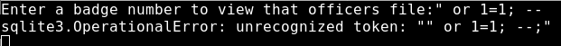

Sql-10 10 ---
https://sql-mayham.openctf.com/ziopxuoiwquyerhnszpasdyvzlkxcjlwerqwer/sql-10/
I will save you a bunch of time. This one does not require you to "escape" the query to inject. This code puts the user supplied input directly into the query.

Note: Anytime you inject SQL the statement must be balanced. The -- at the end of the query ends the query and discards anything after it. Not all SQL languages use --, so don't give up if that doesn't work in the future.
With this in mind, lets try an easy one.

The first thing we need to do is determine the number of columns will return data. Based on the output, we can assume at least 4 and start testing there.
Note: There are lots of great references for commands if you need one.
http://pentestmonkey.net/cheat-sheet/sql-injection/mysql-sql-injection-cheat-sheet
https://www.owasp.org/index.php/Testing_for_SQL_Injection_(OTG-INPVAL-005)

The first thing interesting you sould notice is that we only got back
(1,2,3,4)
and not
(1 'bob', 'simmons', 'none')
(1, 2, 3, 4)
This is important, because we are only getting 1 row of data back and only 4 columns worth. Next lets try 5.

This tells us there is an error because of the number of columns don't match. You usually wont get this, but instead will probably not get back any results. Tip: After getting the first error on number of columns, change from 1 (which will get interpreted as a string or in) and instead use null. Null can be any type and won't error if the appliction expects a specific type (i.e. String).
What version of sql is running? If you remember the error statement, it tells you (sqlite). So now lets get back data. First remember we only get back one row. We need to put our data back in those 4 spots of the union to be able to read it. We will need to start by figuring out the table name (we will skip the typical stuff like user running it etc.).
1 union select 1, 2, 3, name from sqlite_master; --

Now that we have the table name. Lets find the column names.
1 union select 1,2,3, sql FROM sqlite_master; --

This says that the id is the primary key and it autoincrements. For kicks and giggles, lets find out what the last one is.
1 union select 1,2,3,max(id) FROM person;--

now lets query this one

We have the FLAG!